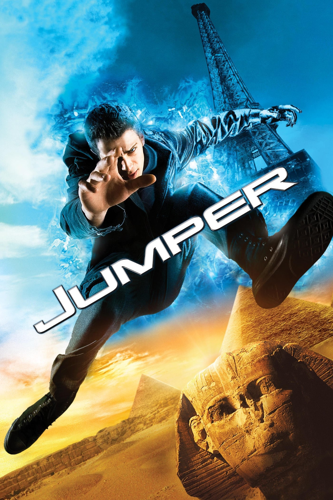

Мировая премьера: 14 февраля 2008
Слоган: Где угодно. Когда угодно. Мгновенно.
Сюжет: Приключения начинаются, когда молодой человек по имени Дэвид Райс обнаруживает, что обладает невероятными способностями мгновенно перемещаться в любую точку мира. Из Нью-Йорка в Токио, из Токио в Рим – для него нет ничего невозможного. Но однажды Дэвид обнаруживает, что он такой не один. Дэвид встречает такого же путешествующего по свету мятежника по имени Гриффин и узнаёт, что таких как он называют телепорты. Их древнейший враг – секретный орден паладинов, во главе которого стоит человек по имени Роланд. Паладины выслеживают и убивают телепортов, поскольку считают, что телепорты обладают слишком большой силой. В этой войне Дэвиду предстоит не только защитить себя, но и спасти свою возлюбленную. Битва может разразиться когда угодно, где угодно, мгновенно.
Режиссёр: Даг Лайман
В основе: Роман Стивена Гулда "Джампер" (США, 1992)
В ролях: |
Хейден Кристенсен | Дэвид Райс |
| Джейми Белл | Гриффин О'Коннор | |
| Рэйчел Билсон | Милли Хэррис | |
| Сэмюэл Л. Джексон | Роланд Кокс | |
| Дайан Лэйн | Мэри Райс | |
| Майкл Рукер | Уильям Райс | |
| Макс Тьерио | Юный Дэвид | |
| АннаСофия Робб | Юная Милли | |
| Тедди Данн | Марк Коболд | |
| Джесси Джеймс | Юный Марк | |
| Кристен Стюарт | Софи |
Бюджет: $ 85 млн.
Кассовые сборы в США: $ 80 млн.
Кассовые сборы в мире: $ 225 млн.
Продолжительность: 1 ч. 24 мин.
Рейтинг: 6.1